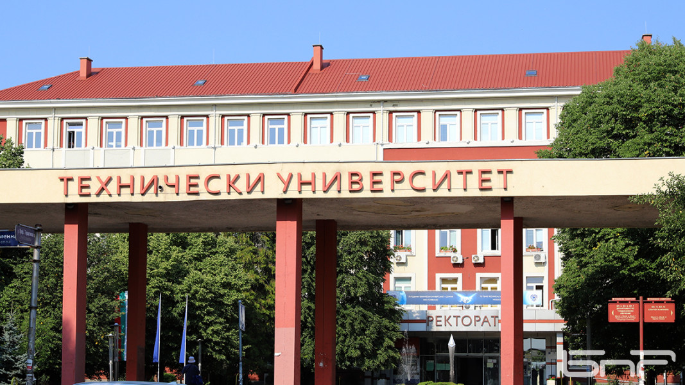
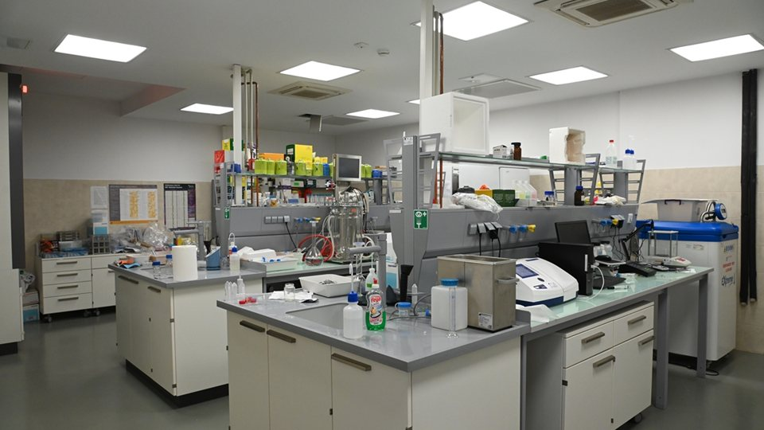

Ректорат на ТУ-София

Модерна университетска библиотека

Иновативни изследователски лаборатории
Добре дошли в ТУ-София
Техническият университет – София е най-големият учебен и научен комплекс в България в областта на техническите и приложните науки. С над 80-годишна история, те подготвят елита на инженерната мисъл в страната.
Университетът предлага обучение по съвременни специалности, международно признати дипломи и тясна връзка с водещи технологични компании.